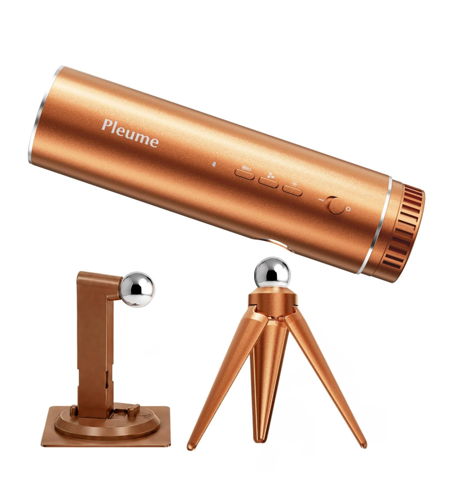
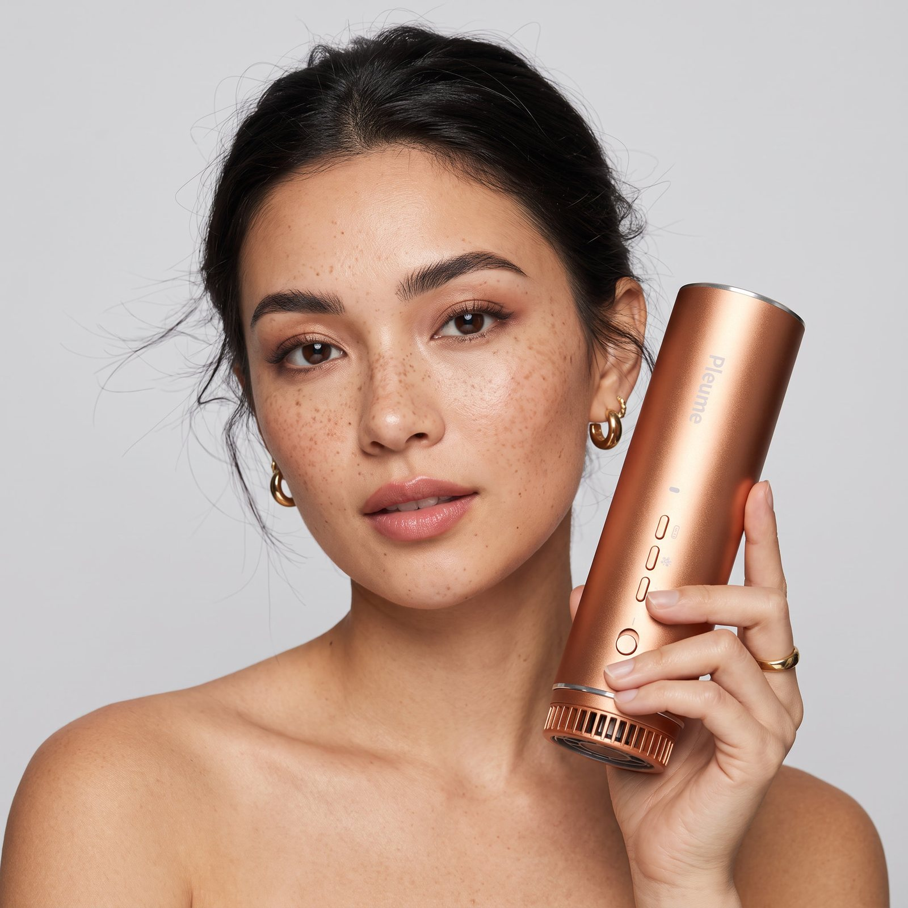
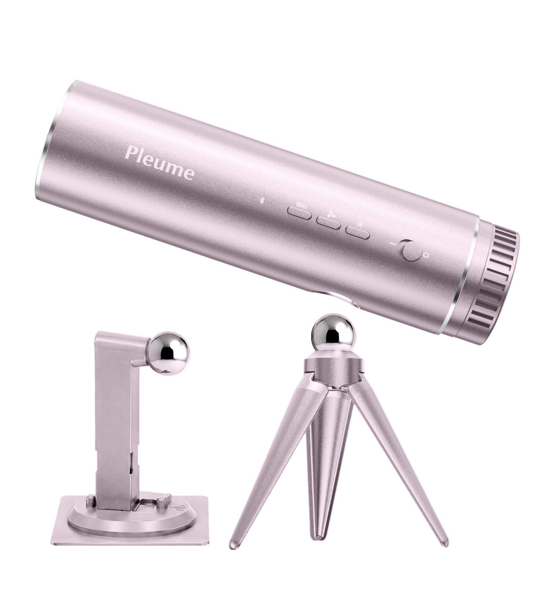

Pleume Paris Review: Can a Hair Dryer Really Be Hands-Free?
You've probably seen the ads — a hair dryer running on a little stand with nobody holding it — and wondered if it's real, if it's any good, and if the brand is legit. We went through the whole spec sheet, the guarantee, and the customer reviews. Here's the straight answer.
Yes, that's the whole idea: a dryer that doesn't need your hand. Photo: Pleume Paris
The claim is real: the Pleume is a fully patented dryer that dries your hair while standing on its own base or mounted to the wall — the first and only one that does. On the label-by-label checklist we use for every dryer, it clears more lines than anything we've put next to it:
- Hands-free use (patented; the only dryer with it)
- Aluminum housing — not plastic
- Same motor technology as the $400 names — 100,000+ RPM brushless, 1200W turbo
- Same frizz-free ionic finish — 50 million+ negative ions
- 20 cm vs 28 cm full-size; 4 modes including tripod and wall mount
- 30-day money-back guarantee + free 2-year warranty, ships from the US
- $199.99 — second-cheapest in the premium field
- Only sold direct at pleumeparis.com; two finishes (Amber, Blush)
The four modes, up close. Video: Pleume Paris
What it actually is

The aluminum body with its wall bracket and freestanding tripod. Photo: Pleume Paris
Hair dryers went essentially unchanged for about fifty years. Then Dyson redesigned the shape in 2016, and everyone has spent the decade since copying that. The Pleume is the first one built around a different question entirely: why does a machine that runs for 20 to 30 minutes a day need your hand at all?
The answer is a 20 cm body with four ways to use it. Hold it without the handle, or with it. Open the magnetic handle into a tripod and stand it on the bathroom counter. Or mount it to the wall. In stand or wall mode you angle the airflow at your hair from the side, and it dries while you do your makeup, answer emails, or just drink your coffee with both hands like a person. A genuine leather travel bag and the wall mount come in the box.
What the label says — and what it doesn't
The spec sheet holds up under the highlighter. Brushed aluminum housing, where Dyson, T3, GHD and Shark are all plastic. A 100,000+ RPM brushless motor with 1200W turbo power — the same high-speed digital motor technology the premium names are built on. 50 million+ negative ions in the airflow, which is the technology behind the silky, frizz-free "salon finish" every premium brand advertises; Pleume has it in full. And a patent — U.S. Patent No. 12,376,659, a real, checkable government document — on the hands-free design.
What the label doesn't claim matters too. No subscription, no refills, no blades to replace, no app. $199.99, once. For a product that will share a counter with $400 machines, that's the quietest flex on the page.

Smaller than it reads on paper — the whole dryer is about the size of a water bottle. Photo: Pleume Paris
What customers say
Pulled from the 291 reviews on the brand’s site, which average 4.9 out of 5. The one consistent gripe in the lower ratings: some wish the cord were longer.
A customer-style demo of the stand mode. Video: Pleume Paris
Who shouldn't buy it
Honesty costs us nothing here. If you want a tool you can grab at Sephora this afternoon, this isn't that — it's sold only at the brand's own site, in two finishes: Amber and Blush. And if you're a stylist drying heads back-to-back all day, a salon workhorse like the GHD is built for that job. The Pleume is built for the person drying her own hair every morning and tired of donating an arm to it.

The bottom line
Most "innovative" hair tools are the same dryer with a new nozzle. This is the rare one where the label makes a claim nothing else on the market makes — and then backs it with a patent, an aluminum build, and a written 30-day money-back guarantee, at half a Dyson's price. If the morning arm workout is your problem, this is currently the only machine that solves it.
Check price at pleumeparis.com — $199.99 →Quick answers
Is Pleume Paris legit?
Yes — it's a US-operated brand with a patented product that exhibited at Cosmoprof 2026, a 30-day money-back guarantee in writing, a free 2-year warranty, and US shipping. The risk is carried by the brand, not you.
Where can I buy it?
Only at pleumeparis.com — there's no retail shelf version.
How does it compare to Dyson?
We did that one line by line: Pleume vs. Dyson Supersonic.